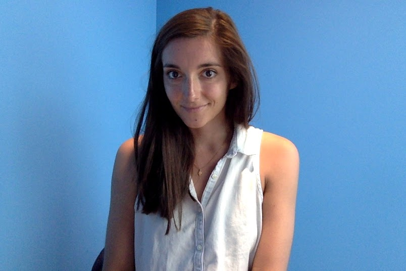

About Me
I am a UX Designer and Researcher completing my Masters in Human-Computer Interaction. I graduated with a BA in International Studies, and spent one year teaching English in South Korea. I then worked for nonprofits in New Zealand before returning home to Pittsburgh to continue nonprofit work. While I love the field, I found impact to be slow-going, which drew me to tech. People's lives can be transformed with just an app -- I started working for a Pittsburgh tech company, and quickly fell in love with UX Design. I feel as though I have found my professional home in human-centered design.